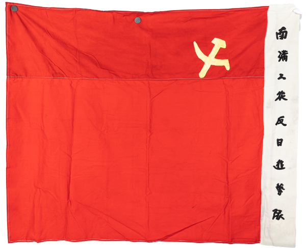
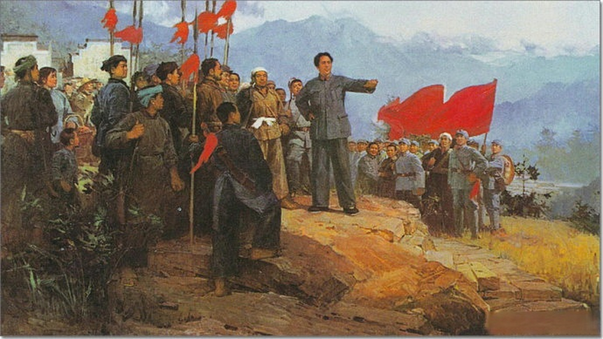
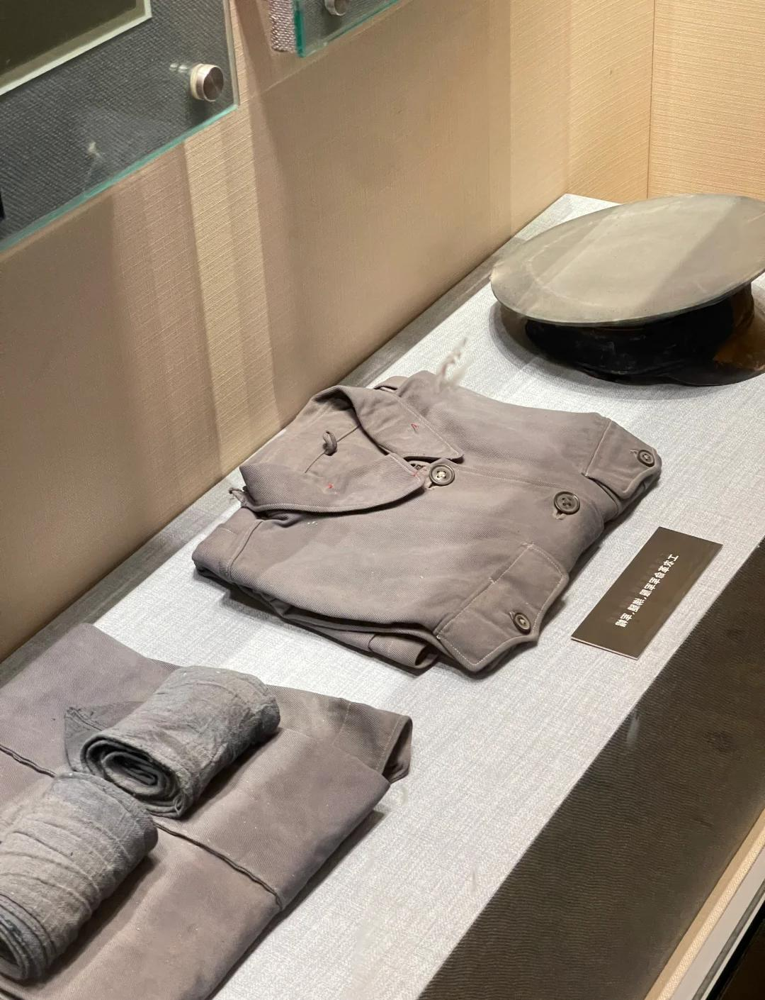
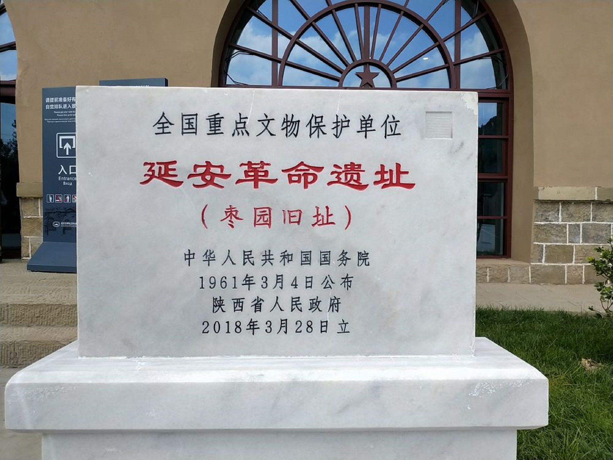

×

从五四运动到新中国成立，中国共产党领导人民进行了艰苦卓绝的斗争，形成了伟大的革命精神。
新中国成立后，红色文化在社会主义建设中发挥了重要作用，涌现出雷锋精神等时代精神。
进入新时代，红色文化被赋予新的内涵，成为实现中国梦的精神动力。
井冈山精神、长征精神、延安精神等，体现了中国共产党人的初心和使命。

革命遗址、纪念馆等文物承载着红色记忆，是传承文化的重要载体。



组织参观革命圣地，重温红色历史，感悟革命精神。
举办红色文化展览，展示革命文物和历史故事。
开展红色文化进校园、进社区，传播革命精神。
邮箱：256279912@qq.com
电话：+86 13158914086
地址:1